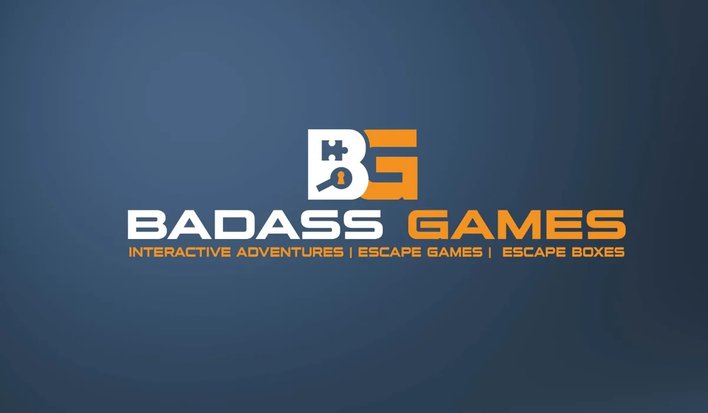

Vacature
Spelleider Escape Game The Hunt - Flexibele bijbaan in Nijmegen
- WerkgeverBadass Games
- WaarMarkt 1, 6511 KA Nijmegen
- Uren0 tot 15 uur per week
- DienstverbandBijbaan
- Salaris€ 21,50 tot € 23,50 per uur
- Soort werkBijbaan of stage
- Geplaatst13 november 2026
- Reageren voor28 december 2026
- Solliciteer
Ben jij spontaan, enthousiast en niet bang om voor een groep te staan? Houd je van actie en vind je het leuk om mensen uit te dagen? Dan zoeken wij jou!
Bij Badass Games zoeken we enthousiaste spelleiders, oftewel Hunters, die onze Escape Game The Hunt in Nijmegen tot leven brengen.
Wat ga je doen?
Stel je voor: het is zaterdagmiddag en je staat midden in Nijmegen klaar voor een groep enthousiaste deelnemers. Na jouw spannende speluitleg gaan de teams op missie door de stad. En jij? Jij gaat op jacht!
Gewapend met een telefoon en je outfit, ga je de stad in om de deelnemers op te sporen en vangen. Ondertussen proberen de teams uit jouw handen te blijven terwijl ze raadsels oplossen en opdrachten uitvoeren.
Naast het jagen zorg je voor een enthousiaste ontvangst, begeleid je het spelverloop en sluit je de Hunt op een leuke manier af.
Als Hunter ben je dus niet alleen spelleider, maar ook actief onderdeel van het spel!
Wie zoeken wij?
- Je bent sociaal, spontaan en enthousiast.
- Je durft voor een groep te staan en weet anderen mee te krijgen.
- Je bent zelfstandig, verantwoordelijk en betrouwbaar.
- Je bent vooral op donderdag, vrijdag of zaterdag beschikbaar, vaak vanaf 15.00 uur.
- Je woont binnen 30 minuten reizen van Nijmegen.
Ervaring is niet nodig! Via onze online Academy leren we je alles wat je moet weten. Daarnaast loop je een keer met een ervaren spelleider.
Wat bieden wij?
- €21,50 bruto per uur (€75,25 bruto per Hunt).
- Je krijgt standaard 3,5 uur per Hunt uitbetaald.
- Een flexibel oproepcontract (0-uren), dus je hoeft niet iedere week beschikbaar te zijn.
- Actief en afwisselend werk in jouw regio.
- Een goede voorbereiding via onze online Academy en een enthousiast team.
Goed om te weten: Een Hunt duurt 1,5 uur. Inclusief voorbereiding en afronding ben je ongeveer 2,5 uur op locatie bezig. Je krijgt hiervoor standaard 3,5 uur uitbetaald. Er is geen aparte reiskostenvergoeding.
Solliciteren
Lijkt het jou leuk om als spelleider aan je eerste missie te beginnen? Solliciteer eenvoudig met je naam, leeftijd, telefoonnummer en woonplaats. Een cv is niet nodig!
Join the Hunt!
Arbeidsvoorwaarden:
- Flexibele werkuren (je kan zelf bepalen welke dienst je wel of niet wilt draaien)
Werklocatie: Fysiek
Over Badass Games

Badass GamesUitje · GiethoornBekijk de bedrijfspaginaMeer vacatures
Klopt deze vacature niet, of is hij al vervuld? Laat het ons weten.